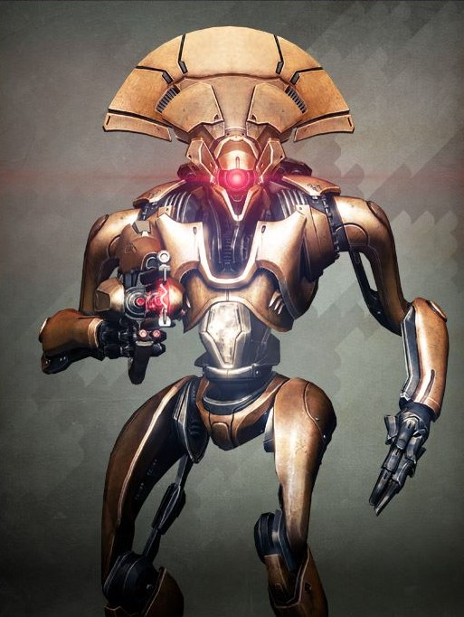
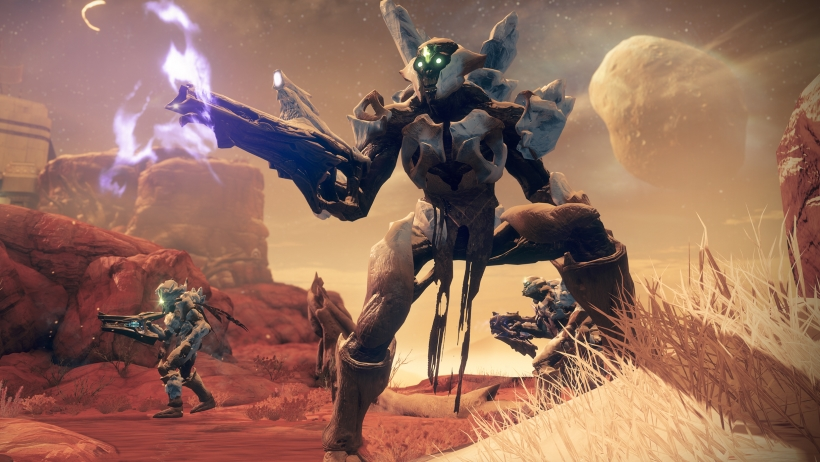
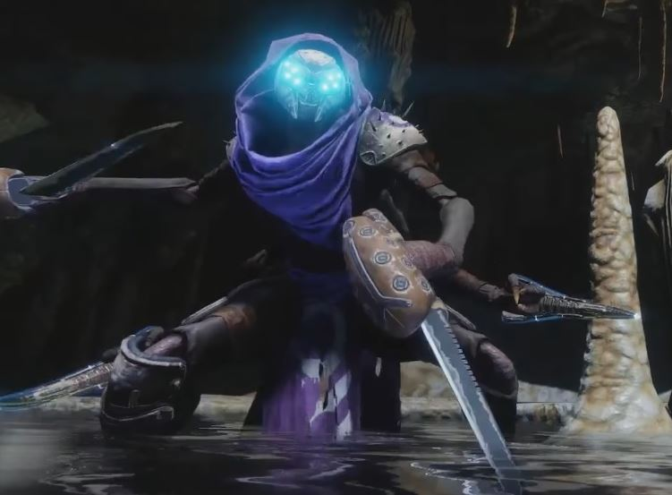
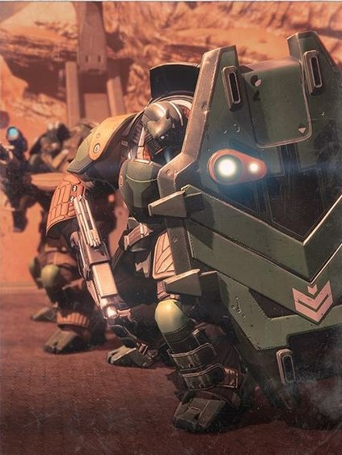
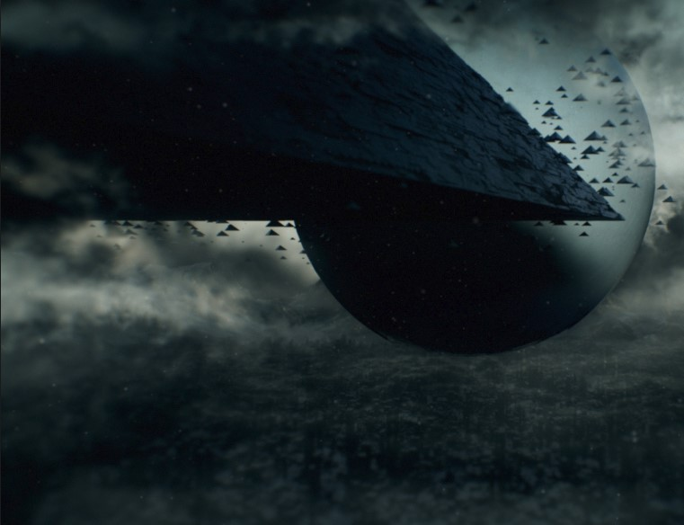

these are the main five races in the world of destiny 2
Vex

The Vex are a cyber-organic species as ancient as the Universe itself.
While individual Vex units are robotic in appearance, they are merely walking tools for
radiolaria, microscopic organisms suspended in Vex milk that contains the species'
collective intelligence. The Vex are capable of great feats of engineering such as
reconstructing entire planets like Mercury and Nessus into their Machine Worlds,
portal-based space travel, data processing and timeline manipulation on a scale impossible
for humanity, but lack language, thought and sentience in the human sense of those words.
They cannot be conciliated or reasoned with, and are hostile to every other lifeform but
their own.
The Vex have been present in the Solar System for billions of years, predating humanity;
their sophisticated and watchfully guarded structures can be found on multiple planets,
including Venus, Mars and Io. Some Vex locations, such as the Black Garden or the Vault of
Glass, are artificial realms existing outside of normal space and time.
Overwiew
The Vex have been described as a "hyperintelligent time-spanning
thought-mesh"[7], a collective mind composed of countless component intelligences
distributed
across time and space. The mobile Vex machines encountered by Guardians are merely
containers
for these intelligences, which carry mind cores filled with milky radiolarian fluid -
hypothesized to be the only remnant of their distant biological origin.[8]
Vex come in a diverse array of shapes and sizes, but the majority share features such as
triangular or conical "heads," single glowing photoreceptors, jointed limbs, and in several
cases arrays of flexible tentacles. Despite their often animalistic appearance, the Vex
appear
to be mass-produced units, constructed of an unknown metal alloy resembling hammered
brass.[9]
Headshots on humanoid Vex do not do much damage and instead send them into a berserk state;
however, shooting the exposed mind cores in their abdomen will cause them to explode.[10]
The
Vex travel to the Floating Gardens to recycle their mechanical bodies when they are no
longer
functional.[11]
History
Origins
The Vex originated in the "flower game" conducted between the Light and Darkness in the
primordial "garden" that existed prior to the creation of the universe. All of these games
would end with a single, self-sustaining pattern emerging and dominating the entire
simulation. This was pleasing to the Darkness, but was irritating to the Light, which
desired that the game produce endless novel patterns instead.
When the Light and Darkness began to war with one another, initiating the beginning of the
universe, the patterns from the flower game escaped into it. In the initial hot state of the
universe the abstract patterns existed as quantum fluctuations, before eventually creating a
more stable substrate for themselves in the briny seas of the first worlds to form in the
universe, the radiolaria. This was the origin of the Vex as they would later come to be
known, and from this point forward they were driven to once more totally dominate the
reality they found themselves in, though operating on "outdated" rules that did not account
for the paracausal powers of the Darkness or the Light.
The Ancient Past
The earliest historical event associated with the Vex is when the Hive god Crota, Son of
Oryx opened a portal to a place where the Vex were present, hoping to find a secret power
for himself. Instead, he allowed the Vex to invade Oryx, the Taken King's throne world, the
High War.[13] At first unsuited to the Ascendant Realm and the rules governing its reality,
the Vex quickly learned of the Hive's Sword-Logic, creating Quria, Blade Transform to
investigate it. Through Quria, the Vex learned to achieve divinity by killing all who
opposed them and adopting worship as a primary function. Though Oryx eventually succeeded in
eliminating the Vex from his realm, they preserved what they learned and passed it on to the
rest of the Vex hive mind.
hive

The Hive are a macabre, incredibly ancient race of undeadlike aliens that
worship and serve the Darkness. Their entire culture is based around a principle known as
The Sword Logic, which dictates that they must destroy other civilizations in order to
accrue paracausal power and feed the Worms that live within their bodies. Along with the
Darkness itself, they are led by a pantheon of dark gods, who derive power and sustenance
from the destruction wrought by the Hive.
In Sol, they have a significant presence on the Moon, where they have built the Hellmouth
and Scarlet Keep, as well as having a presence on certain regions of Earth,[1] around
Saturn, where the massive Dreadnaught orbits, the icy regions of Mars and on Titan, where
they infest the ruined arcologies.[2]
Overwiew
The Hive are an "impossibly ancient" race born from a pact with the Worm
Gods. Hive structures delve deep into wherever they lay claim to, unheeding of the damage
done in the process, crafting linked caverns and gothicesque columns; these underground
spaces resemble a dungeon recently pulled up after an extended period underwater.[3] They
are able to manipulate the physical world in ways humanity can only begin to imagine,[4] and
have witnessed the Darkness consume countless worlds in the past.[5]
The Hive are not an enemy military so much as rising force.[6] They base their entire
existence around the extermination of other forms of life, especially those that follow the
way of Light and the Traveler, and approach their task with religious fervor. To the Hive,
killing and conquest are not merely acts of war, but of worship.
History
Origins
The Hive trace their origins to a gas giant named Fundament. Long ago, the proto-Hive
crashed their homeworld into Fundament, ostensibly to hide from something unknown. The
shards of this homeworld became a number of continents that floated upon a sea called the
Fundament Ocean within a layer of the gas giant's atmosphere, and the proto-Hive eventually
built a meager civilization upon them and forgot their old history. In addition to the
proto-Hive, Fundament was home to hundreds of other intelligent species, and Fundament's
fifty-two moons were inhabited by a space faring species called the Ammonites who were
overseen by the Traveler.[11][12][13]
Life was quick and harsh for the proto-Hive. Their natural lifespan rarely exceeded ten
Fundament-years, though females who ate "mother jelly" became able to spawn and live longer.
In terms of environmental hazards, Fundament was almost inhospitable. The Fundament Ocean
was toxic, the skies were eternally stormy, the rain poisonous and sometimes corrosive,
lightning had enough power to vaporize anyone it struck, "living clouds" called Stormjoys
would prey on the populace, and the proto-Hive frequently warred with each other.[11][10]
The Pact
Deep within the Fundament Ocean, the sisters encountered the Worms, who drew their power
from the Darkness itself: Yul, the Honest Worm, Eir, the Keeper of Order, Xol, Will of the
Thousands, Ur, the Ever-Hunger, and Akka, the Worm of Secrets. The Worm Gods claimed that
they had lived and grown in Fundament's depths for millions of years, trapped by the
Leviathan and the Traveler. They had called many species to Fundament, hoping one would be
tenacious enough to find them. They offered Xi Ro, Sathona, and Aurash immortality if they
would allow themselves to be hosts for the Worms' larvae, with the caveat that if the
sisters ceased to obey their natures (Xi Ro's desire to test her strength, Sathona's
cunning, Aurash's inquisitiveness), their Worms would consume them. Furthermore, the
stronger the sisters became, the greater their Worms' appetites would be.[20]
fallen

The Fallen, known in their own language as the Eliksni, are an insectoid
alien species, infamous for being notorious scavengers and raiders. The Fallen are remnants
of a mighty civilization that had been flourishing under the Traveler's grace until an
apocalyptic event called the Whirlwind, much akin to humanity's Golden Age and Collapse. The
Traveler fled, leaving the survivors behind, but after many centuries, the Fallen found her
once again in the Solar System. Seeking to reclaim their glory, the Eliksni decided to
explore the newly discovered Solar System and start a war against humanity in an attempt to
retake control of the "Great Machine".[1]. Roving Fallen bands scavenge whatever technology
and weapons they can find and rally under the banners of various warring Houses and crime
syndicates.
Overwiew
The Fallen are a nomadic race of pirates and scavengers descended from a
once-great civilization. This is evidenced by their social organization into various Houses
by the manner of meritocratic nobility, the banners and flags of which are still flown like
heraldry.[3] The Fallen search the stars for artifacts of their lost civilization.[4] They
first arrived in the Solar System after the Collapse, arriving in their massive Ketches to
loot and pillage humanity's former worlds, leaving grief and wreckage in their wake.
The Fallen are antagonistic toward the Cabal, Taken, Hive, and Vex, and are known to be in
conflict with the latter two over territory and technology. They have ordinarily avoided the
Cabal until the Taken War, when the House of Wolves attempted to make their new home on Mars
using abandoned Cabal bases. They lack any type of established stronghold such as the
Citadel or the Hellmouth, instead preferring to squat in ruins or inside their ketches,
going from place to place in search of a potential home.
History
Origins
The Fallen's name for their own race is "Eliksni".[8] They were once graced by the Traveler,
which they named the "Great Machine", and were presumably uplifted by its gifts in the same
manner as humanity. Their ubiquitous cloaking technology was originally designed as toys for
children. The Eliksni made during their Golden Age twice the advancement in space
exploration than Humanity.[9] During this time, they came to control multiple star
systems[10] until a event known as the Edge Wars brought infighting among the Houses and
later ended by the House of Kings and House of Judgement to usher a Golden Age. Their
homeworld of Riis and civilization would be destroyed by a unforeseen event called the
"Whirlwind". In the aftermath, the surviving Fallen became embroiled in a bloody civil war
over their civilization's ruins, before achieving a tenuous peace and embarking on a journey
into space to locate the Traveler in order to return to greatness. The Fallen eventually
arrived at the Solar System shortly after humanity's Collapse, and rediscovered the Traveler
on Earth.[11]
Early wars
When the Fallen first arrived in the Sol System, they terrorized humanity, conducting raids
and attacks against outposts. Very early into these attacks, they started to meet opposition
in the form of Guardians, who fought back against them time and time again.[12] The Fallen
grew to resent the Guardians, seeing them as an obstacle that prevented them from claiming
the "Great Machine", and believed they were dooming them and their people.[1] Eventually,
the space below the Traveler turned into The City, as more and more people gathered below
the Traveler, and thus walls were built to defend them.[12] As time wore on, the Fallen
began to understand that if they wanted to take back what was theirs, they would need to do
it with force. This was the start of the Eliksni siege.
At some point during the Dark Age, the House of Rain encountered a human settlement
protected by Saint-14 on Mercury and proceeded to destroy the settlement and kill the
survivors, but were unable to kill Saint-14 who grew to hate the Fallen race after he
witnessed Dregs devouring children.
Rezyl Azzir began venturing out from the Last City to combat potential threats which earned
him great enmity from the Fallen. Eventually, a Captain of the House of Devils named Eksori
ambushed Rezyl in an attempt to kill him to gain glory, however Rezyl was easily able to
fend off the ambush. Later he teamed up with two other Guardians to kill a Kell whose Ketch
was stationed in the Tescan Valley between two mountain peaks.
cabal

The Cabal are a warmongering race of giant bipedal humanoids with a
heavy-set, rhinoceros-like appearance. Their ever expanding interstellar Cabal Empire
spreads through organization, efficiency, and corruption[5]. The Cabal army that occupied
Mars and held it for some time was but a fraction of their full might[6]. During the Red
War, Cabal warlord Dominus Ghaul and his Red Legion seized the Last City and the Traveler in
a surprise attack. After Ghaul's demise, the Red Legion shattered into numerous warring
factions across the Solar System. The exiled Emperor Calus, previously dethroned by Ghaul
and later arriving onboard his spaceship, the Leviathan, presents less antagonistic attitude
towards humanity and the Guardians. In recent time, Caiatl, daughter of Calus, assumed the
Imperial throne and became the new Empress of the Cabal Empire.
Overwiew
The Cabal are an extremely tough species, willing to defend their
territory until every last
one of them is dead.[8] Their architecture is very industrial, with an emphasis on burrowing
into mountains for defense. They are a very industrious, militaristic species whose social
structure and way of life revolves largely around conquest and expansion.[9] Their armor and
technology can often be seen leaking a substance similar to oil and even emit smoke when
damaged or worn.[10] For centuries they have devoted their resources to occupying and mining
Mars,[11][12] contesting with the native Vex programming as evidenced by the many Cabal
ships seen bringing armies to and from the red planet, and recently dealing with the
Guardians.[8]
Interestingly, the Cabal is the only hostile race up to date that does not appear to overtly
feature worship in its culture—the Fallen worship their god-like Servitors, while Hive have
devoted their entire religion to the worship of the Darkness, while the Vex of the Sol
Divisive revere the unknown entity that is the Black Heart—but as of the Taken War, evidence
has been gathered that the Cabal revere a deity-like Emperor, later being revealed to be
Emperor Calus.[13][14] And at one point, they have even ruled the galaxy, and since the
reformations that happened within their empire, they seek to do it again, and likely
beyond.[15]
History
Origins
"In the Cabal legend, a hero seeks to possess the sun. He succeeds. Then, he becomes
Emperor. The Cabal... are not a subtle people."
— Tyra Karn[16]
According to Cabal myth, the first Emperor was a hero named Acrius who allegedly took the
sun.[16] In the earliest days of this new empire, the Cabal emperor ruled alongside the
venal military aristocracy known as the Praetorate, which allowed the people to suffer so
the Legions who served them could grow.[17]
Golden age
Calus claims to have overseen a reign of glory. His Empire was an immense military power,
but valued willpower, learning, gentility, and subtlety. Debate was as celebrated as
warfare. Savage pit fights coexisted with precise marksmanship and refined martial arts. The
Empire crafted technological marvels[22] that allowed every need to be met and every life to
be lived in comfort.[23][24][25][26]
As the Cabal Empire expanded, it encountered countless alien races and absorbed them into
itself: indoctrinating their species, collecting their technology, learning their knowledge,
and merging with their culture. The number of species within the Cabal Empire "defied
reckoning,"[27] and examples of the things they created, whether texts, tech, or
superweapons, were archived in carefully maintained athenaeum worlds for study and potential
future use.[28][22]
Centuries after destroying the Psions' clairvoyant OXA Machine, word reached the emperor
that it had been rebuilt on the moon of Brand. The Evocate-General then sent her ships to
bomb the moon but Calus stopped her ships and instead proposed an alliance with Otzot, the
Psion which rebuilt the machine. [17]
It was seemingly during Calus's reign that the Cabal learned of the Traveler and the Light,
and gained some knowledge on the Darkness from the "Dreams of worms". His Empire has even
defeated a Light-empowered race on at least one occasion.
darkness

The Darkness[6], also known as the Winnower or the Deep, is a powerful,[7]
paracausal force inimical to the Light. It is the main antagonist of the Destiny series.
Overwiew
Like the Traveler, the Darkness is a cosmic paracausal force that has
existed since before the beginning of time. In our universe, it has been shown to enact its
will indirectly through numerous proxies and servants, with some of the most powerful being
worshiped as deities unto themselves. The Vex, Hive, Taken and Scorn are all linked to this
force.
The Darkness is fundamentally driven to reduce complexity and diversity within the universe,
and to eliminate any entity which cannot survive in the face of adversity; its philosophy is
tied to that of the Sword Logic, though not necessarily identical to it. The Darkness once
ruled the universe, and the Hive believe that the Light must be consumed for the Darkness to
reclaim its domination.[9] Its ultimate goal is to bring about an end-state of the universe
in which the only entities that exist are those that have overcome all possible obstacles to
their survival, and which have the strength to continue existing forever. It refers to this
goal as the "final shape" of the universe.
History
Origins
According to the Lore Book "Unveiling," which is seemingly narrated by the Darkness itself,
both the Light and the Darkness have existed since before the beginning of time, and thus
before the universe came into existence. Being unbound by the laws of causality, neither the
Light or Darkness can be said to have a beginning. Rather, they are emergent properties of
even more fundamental "mathematical structures" that in turn underlay reality itself. [10]
In the allegorical story recounted in the Lore Book, the Darkness and Light are referred to
as the "Winnower" and "Gardener" respectively. The Winnower and Gardener occupied themselves
by engaging one another in a game, analogous to a vastly more complex version of the "Game
of Life" devised by Earth mathematician John Conway. This game would consistently arrive at
an end-state dominated by a single, self-perpetuating pattern, which subsumed all others in
the game. The winnower found this to be a pleasing outcome, but the gardener felt the
pattern to be boring, and desired that the game endlessly produce novel patterns instead. In
The Distant Past
The earliest recorded mention of the Darkness known to the Guardians comes from the Books of
Sorrow, a collection of records discovered aboard the Dreadnaught of Oryx, the Taken King.
The books describe the origin of the Hive on the gas giant Fundament, where three daughters
of a deposed king, Aurash, Xi Ro, and Sathona, set out to save their world from a prophesied
apocalypse, and in their quest encountered the massive being known as the Leviathan. The
Leviathan warned them against the temptation of "The Deep," a philosophy which held that
"existence is the struggle to exist," and which it claimed would lead them only to ruin and
calamity. It instead told them to pursue the philosophy of "The Sky," which encouraged
collaboration to build a kinder, more prosperous world, even if it meant that some deaths
and misfortunes must be allowed to occur. The sisters rejected the Leviathan's advice, and
dove deep into the core of their world to find the five Worms: Eir, the Keeper of Order, Ur,
the Ever-Hunger, Yul, the Honest Worm, Xol, Will of the Thousands, and Akka, the Worm of
Secrets.